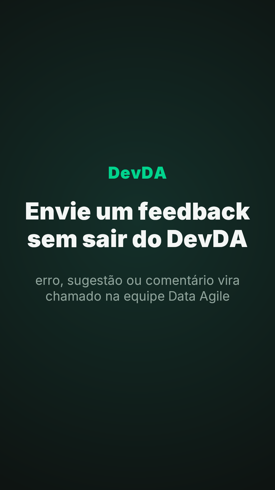
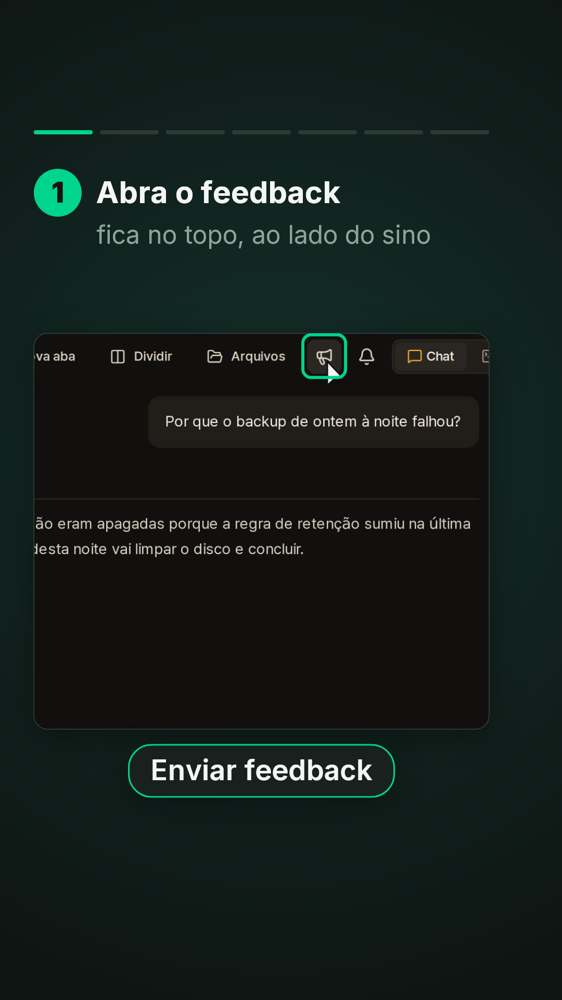
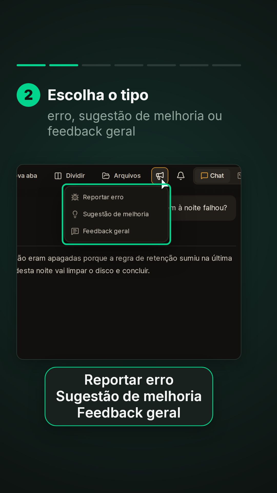
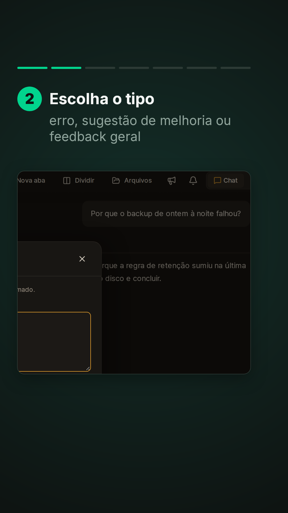
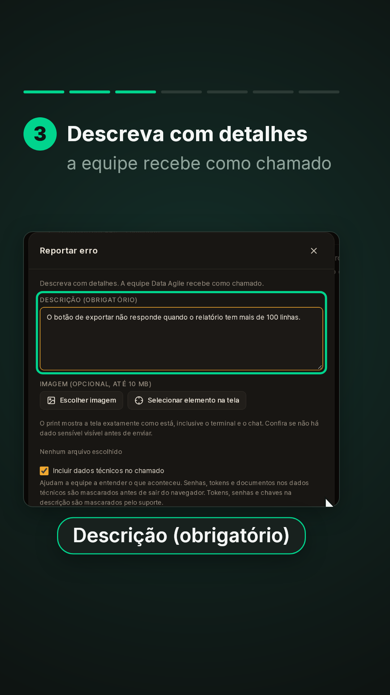
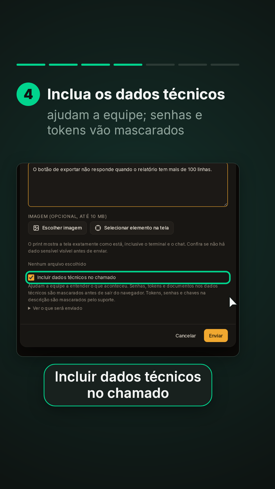
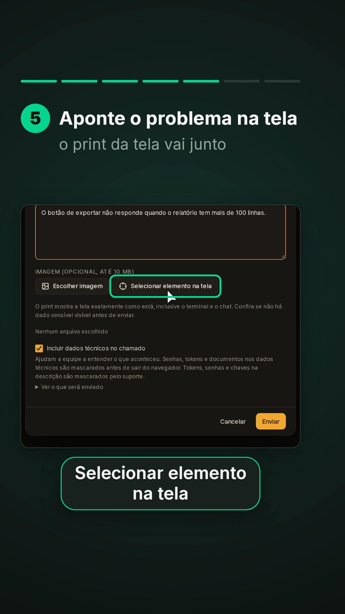
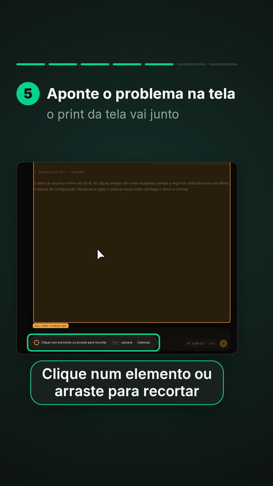
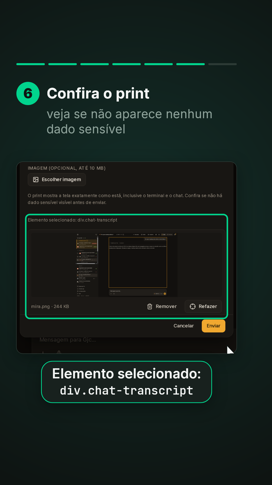
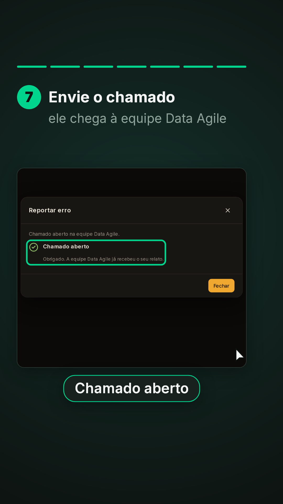
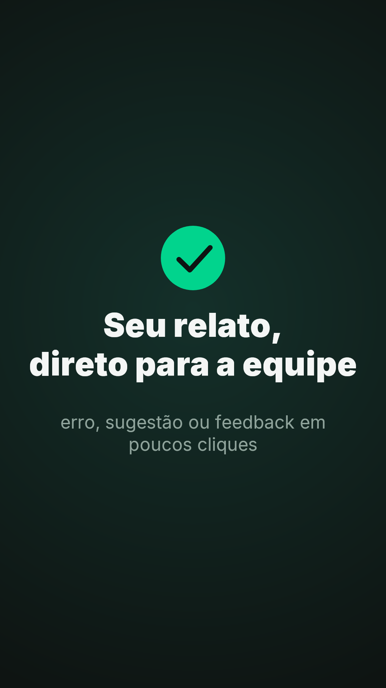
# Enviar feedback (série "Veja em ação" do DevDA, vídeo 4)
- **Formato:** 9:16 (1080x1920), **55 s**, sem áudio, paleta Data Agile. Material de treinamento.
- **Para que serve:** o megafone no topo abre um chamado na equipe Data Agile (erro, sugestão de melhoria ou feedback geral), com descrição, dados técnicos mascarados e, se quiser, o print de um elemento da tela.
- **Material:** prints da **sessão de demonstração** com textos fictícios em pt-BR. O portal é **simulado na cópia da demo** (`_captura/prep-feedback.py`: `/api/portal/me` com feedback ligado e o `POST /api/portal/feedback` respondendo 201 sem número nem link): nada foi enviado ao GLPI, nenhum chamado, número ou entidade real aparece. Desktop 1440x900 @2x. Captura: `_captura/shoot-feedback.ts`.
- **Rótulos exatos** (`i18n.pt.ts`, `FeedbackButton.tsx`, `FeedbackDialog.tsx`, `ElementPicker.tsx`): "Enviar feedback", "Reportar erro", "Sugestão de melhoria", "Feedback geral", "Descrição (obrigatório)", "Incluir dados técnicos no chamado", "Selecionar elemento na tela", "Clique num elemento ou arraste para recortar", "Elemento selecionado: {name}", "Enviar", "Chamado aberto".
## Gramática de movimento
Igual aos vídeos 1 a 3. Barra de 7 passos.
## Tabela
| tempo | passo | câmera | objetos e motion | legenda (título / apoio · rótulo) |
|---|---|---|---|---|
| 0–4,4 | Capa | — | — | **Envie um feedback / sem sair do DevDA** / erro, sugestão ou comentário vira chamado na equipe Data Agile |
| 4,4–11,0 | 1 | tela, zoom no topo (5,6) | cursor no megafone (7,4); contorno; clique (9,8); menu (10,2) | Abra o feedback / fica no topo, ao lado do sino · "Enviar feedback" |
| 11,0–16,6 | 2 | topo, depois o formulário (15,7) | contorno no menu; clique em Reportar erro (15,2) | Escolha o tipo / erro, sugestão de melhoria ou feedback geral · "Reportar erro / Sugestão de melhoria / Feedback geral" |
| 16,6–23,0 | 3 | formulário | o texto aparece (18,6); contorno no campo | Descreva com detalhes / a equipe recebe como chamado · "Descrição (obrigatório)" |
| 23,0–29,0 | 4 | desce no formulário | contorno na caixa marcada | Inclua os dados técnicos / ajudam a equipe; senhas e tokens vão mascarados · "Incluir dados técnicos no chamado" |
| 29,0–36,4 | 5 | formulário, tela inteira (31,9), formulário (35,9) | contorno no botão; clique (31,4); seletor sobre a tela; contorno na dica; clique na conversa (35,4) | Aponte o problema na tela / o print da tela vai junto · "Selecionar elemento na tela"; "Clique num elemento ou arraste para recortar" |
| 36,4–42,4 | 6 | formulário | contorno no print anexado | Confira o print / veja se não aparece nenhum dado sensível · "Elemento selecionado: div.chat-transcript" |
| 42,4–49,0 | 7 | confirmação (44,3) | clique em Enviar (43,8); confirmação (44,2); contorno | Envie o chamado / ele chega à equipe Data Agile · "Chamado aberto" |
| 49,0–55 | Fechamento | — | círculo, visto, frase | **Seu relato, / direto para a equipe** / erro, sugestão ou feedback em poucos cliques |